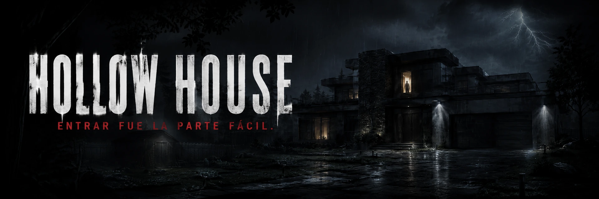

Hollow House

UN JUEGO DE GARBINO SANTINO
La historia empieza
donde la ciudad dejó de mirar.
Hollow House es un juego de terror 2D ambientado en Hollow Creek. Acompaña a Alex y Sebas, explora con la linterna y encuentra una salida antes de que te descubran.
SOLO EN WINDOWS Español · English · Português